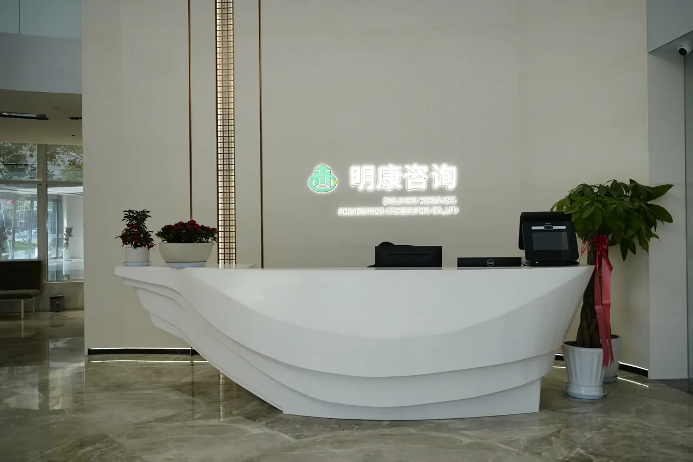

监理分公司合作流程：从接洽到首个项目
先确认区域与业务方向，再核对双方资料，把人员、费用、总部支持和审批方式谈具体。签订协议后，用首个项目跑通投标、进场和结算流程。

第一步：确认双方是否匹配
说明团队熟悉的区域、工程类型、客户需求和现有人员。请总部介绍可承接的业务、区域安排与服务方式，先把合作范围对齐。
第二步：交换资料
| 团队准备 | 向总部了解 |
|---|---|
| 团队介绍、人员与专业构成 | 企业登记、资质与公开业绩 |
| 近期项目及预计时间 | 项目报备和投标流程 |
| 对技术、人员与系统的需求 | 总部支持清单与对接人 |
| 资金安排与预计回款计划 | 费用口径、结算流程和对账样例 |
第三步：谈清合作方案
把下面六项逐条写下来：区域与业务范围、人员配置、总部支持、费用计算、回款结算、项目审批。可使用五个合作要点准备问题。
对于投标材料、人员调整、技术咨询和请款，分别确认办理部门、材料与时间。用一个近期项目做演示，更容易发现流程中的缺项。
第四步：签协议，办理设立与接入
将已确认的方案做成协议及附件。涉及设立分公司的，双方根据当地登记要求明确办理人、所需文件和完成时间；同时落实人员、印章、财务和档案的管理安排。
第五步：跑通首个项目
按报备、投标、合同评审、团队进场、现场管理、回款结算的顺序推进，每个环节明确双方联系人。首个项目完成首次结算后，回看材料、时限与费用是否需要调整。
退出与交接提前约定
协议中列明通知方式、在建项目衔接、人员与档案移交、应收应付核对及登记事项的办理分工，交接时按清单逐项确认。
用 5 个维度对照候选单位
相关阅读
常见问题
初次沟通要带哪些资料？
准备团队介绍、主要业务区域、人员配置和近期项目信息；向总部了解业务范围、资质资料、支持清单和费用结算方式。
合作协议重点写哪些内容？
写清区域与业务范围、双方职责、人员管理、用章、费用、回款结算、档案与退出交接，再附具体流程表。
第一个项目如何启动？
由双方确定对接人，按总部流程依次完成报备、投标、合同评审、团队配置和进场，第一笔结算后共同复盘。